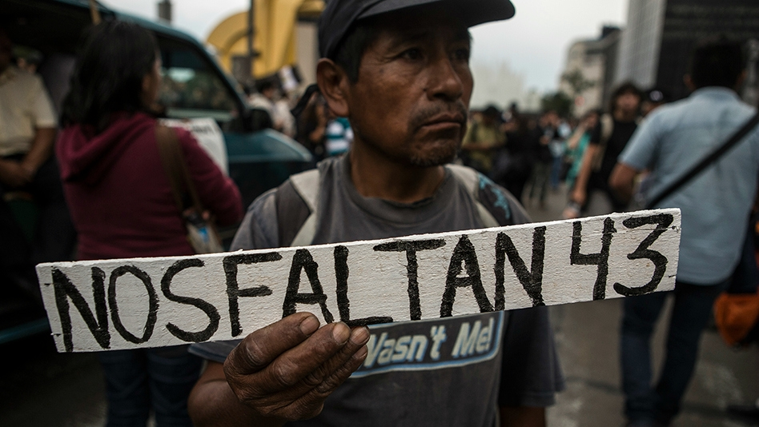
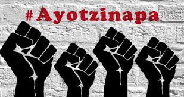

Los estudiantes de la Escuela Normal de Ayotzinapa han sido objeto violaciones graves de derechos humanos, el 12 de diciembre de 2011, en Chilpancingo, Guerrero, durante un intento de desalojo realizado por corporaciones policiacas estatales y federales, dos jóvenes fueron ejecutados extrajudicialmente Jorge Alexis Herrera Pino y Gabriel Echeverría de Jesús; tres jóvenes fueron heridos por impactos de proyectil de arma de fuego; 24 personas fueron privadas arbitrariamente de la libertad; y al menos una persona fue torturada. Estos hechos permanecen impunes. El 26 y 27 de septiembre de 2014, en las inmediaciones de la ciudad de Iguala, policías preventivos municipales y personas no identificadas atacaron a los normalistas en al menos cuatro eventos violentos relacionados entre sí, 6 personas fueron ejecutadas, incluyendo 3 estudiantes, Daniel Solís Gallardo, Julio César Ramírez Nava y Julio César Mondragón Fontes. Al menos 20 estudiantes resultaron heridos, dos permanecen heridos de gravedad: Aldo Gutiérrez Solano, quien se encuentra hospitalizado con muerte cerebral y Edgar Andrés Vargas. Todos los estudiantes tienen entre 15 y 19 años de edad.

¿Los estudiantes están vivos? El equipo investigador de la CIDH dijo que lamentaba no saber qué pasó con los 43 jóvenes. El año pasado, el entonces procurador general de la República, Jesús Murillo Karam -su lugar ahora lo ocupa Arely Gómez-, declaró que los policías municipales entregaron a los estudiantes al cártel Guerreros Unidos, que los mató y los incineró en el remoto basurero de Cocula para después arrojar sus cenizas a un río. Pero los investigadores de la CIDH rechazaron esta conclusión. Un perito experto en manejo de fuego dijo que para quemar los 43 cuerpos sus agresores habrían necesitado cerca de 60 toneladas de madera y neumáticos y no hay evidencia de que haya habido un fuego masivo en el basurero de Cocula. Ante los señalamientos del informe, la Procuraduría defendió la investigación oficial, insistiendo en que un buen número de los 43 estudiantes fueron incinerados en ese lugar.Pero el presidente Enrique Peña Nieto instruyó a la dependencia que haga nuevos peritajes en el basurero y se tengan en cuenta las investigaciones y recomendaciones de la CIDH. Las autoridades mexicanas aseguraron que los restos de Alexander Mora fueron hallados en una bolsa en un río, pero la comisión dice que los huesos fueron encontrados en un lugar que está a horas en auto del basurero. El reporte de la comisión también lanza dudas sobre los motivos de la desaparición y sus responsables. Las autoridades judiciales han dicho que el exalcalde de Iguala, José Luis Abarca, ordenó el ataque porque temía que los estudiantes causaran disturbios durante un discurso de su esposa, quien tenía ambiciones políticas. Una vez en manos del cártel de Guerreros Unidos, los estudiantes fueron confundidos con Los Rojos, una organización criminal rival, según la investigación oficial. Pero los expertos independientes dicen que los estudiantes llegaron a Iguala después de que terminara el discurso de la esposa de Abarca y que esa no fue la razón por la que los jóvenes, que estaban desarmados, fueron atacados. La comisión ofreció su propia teoría: los estudiantes pudieron haber tomado un autobús sin saber que era usado por criminales para transportar heroína a Estados Unidos. La existencia de un quinto autobús que fue retenido por los estudiantes nunca fue incluida en la investigación oficial, dijo la comisión, añadiendo que este puede ser un elemento clave del caso. Otra interrogante que está abierta es cuál fue exactamente el papel que jugaron los militares y la Policía Federal aquella fatídica noche. La comisión pidió al gobierno investigar si los uniformados fallaron en su obligación de proteger a los estudiantes, pues las fuerzas del orden estuvieron monitoreando aquella noche del 26 al 27 de septiembre los movimientos de los jóvenes y supieron cuando fueron atacados.
